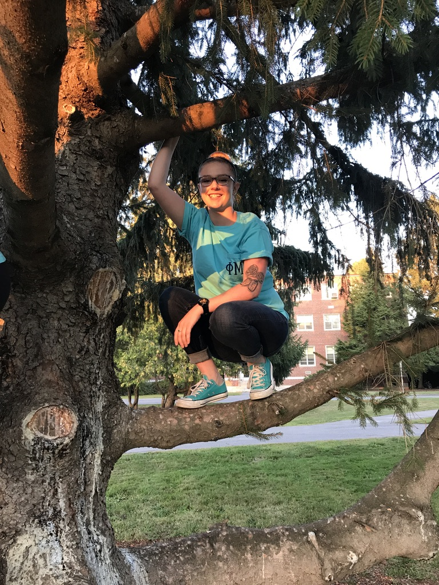

| Home | Family and Pets | Phi Mu | BDUBS | Business |
|---|
Hello! I am a second year student at UMaine. I grew up in Pembroke, New Hampshire, and graduated from Pembroke Academy in 2015. In early 2016 I moved to Maine and decided to attend UMaine. This past spring I joined greek life and became a sister of Phi Mu. In my free time I enjoy hanging out with friends and sisters, going to wing night at BDUBS, and taking naps.
